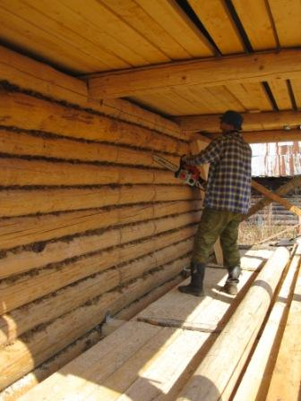
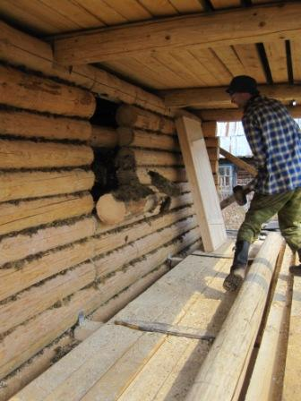

- Главная
- Cруб
- Выпиливание входной двери
- Двери
- Монтаж слива парной
- Основание первого уровня пола
- Обрешётка первого уровня пола
- Тепло и гидроизоляция в парной
- Основной пол в парной
- Окно в предбаннике
 Пропиливание места под входную дверь.
Пропиливание места под входную дверь.
Пропиливание места под входную дверь.
Пропиливание места под входную дверь.

Сруб пришлось наращивать на один ряд.
Вот почему верхние брёвна короче.
До зимы успели закрыть крышу крашеным профнастилом
и обшить лбы листами ОСБ.
Малый скат из оцинкованного профнастила на лбах
и дымоход установили уже весной.
Весной стройку продолжили выпиливанием места под входную дверь. Желательно подобрать размер двери и положение пропила так, что бы верхнее и нижнее бревно сруба остались по возможности целыми. Размеры пропила приняли на 1,5см больше габаритов дверного косяка на каждую сторону. Эти зазоры потребуются для уплотнения Джутом, закрелённым на двери при помощи строительного степлера.
Ну и как без кувалды в строительстве:) Выбиваемые части сруба могут упасть не только по направлению удара кувалды т.е. внутрь. Но и на Вас. Надо быть осторожным. На кадре видно - нога могла пострадать.
